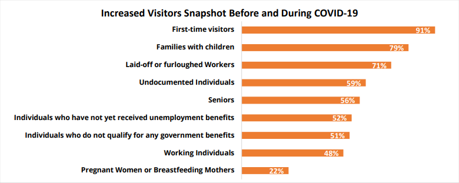
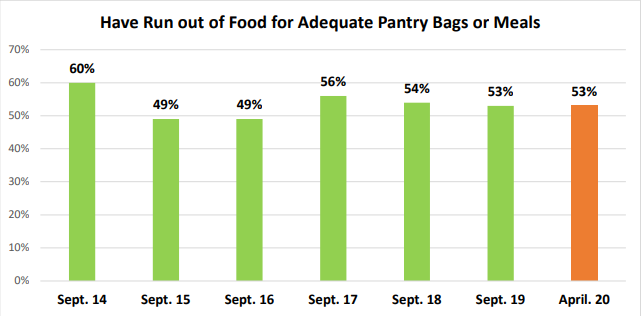
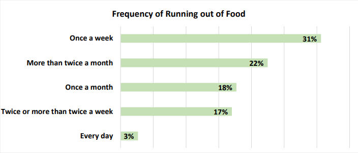
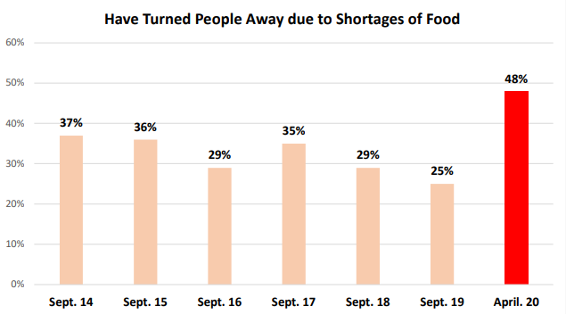

As NYC continues to grapple the situation resulting from the COVID-19 and economic shutdown, a new crisis became apparent, food shortages. With
the shutdown of the economy and New Yorkers losing their jobs, many families have difficulty putting food on the table and meeting ends meet. According to the food
bank, nearly three-quarters of the food pantries and soup kitchens have reported in overall visitors compared to before covid.
Food Bank has distributed nearly 21 million meals across the city since the start of the outbreak, an increase of 20 percent in overall food distribution compared
to the same period last year

The increase in visitors is driven primarily by first-time visitors (91 percent), followed by families with children (79 percent)


More than half (53 percent) of food pantries and soup kitchens surveyed reported running
out of food during the month of April 2020. Among participants reporting running out of food during the month of April 2020, 48 percent
reported turning people away due to lack of food

As of April 20, 2020, there has been a near 100% increase in people rejected due to food shortages. As the economy is shutdown, the percentage of individuals
who are turned away are expected to increase